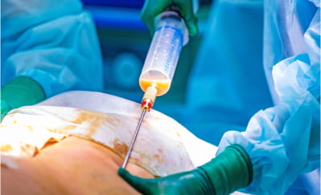

Bonjour. Je suis le Dr. Jean-Michel Cohen Jean-Michel Cohen, directeur du Département Européen de la Santé àParis. Aujourd'hui, j'ai le plaisir de vous présenter une grande avancée de la science contemporaine : la formule prolipolique naturelle Slimpal Keto. La dose recommandée est de deux capsules par jour, de préférence avant les repas. Ne vous laissez pas tromper par son apparence simple ; son activité est incroyablement puissante.
Grâce à elle, vous éliminerez tout le tissu adipeux inutile rapidement, 100% en toute sécurité et sans effort. Votre corps deviendra soudainement mince et ferme, comme si vous faisiez du sport chaque jour et suiviez un régime strict, mais vous n'avez pas besoin de faire tout cela.
De plus, vous transformerez tout le tissu adipeux en énergie ! Cela semble un miracle ? Un peu, mais cela n'a rien à voir avec des miracles. C'est de la pure science.
"Je mange comme un ogre et je suis mince comme un bâton !"
Au travail, nous avons une cantine où vous vous servez ce que vous voulez et vous payez en fonction du poids de l'assiette. Depuis que je maigris avec cette formule prolipolique, c'est-à-dire depuis environ un mois, je mange là-bas et je prends tout ce que je veux : pommes de terre, steaks, pâtes... Et je n'oublie jamais le dessert : flan ou crème dessert. Miam !
Les collègues qui se moquaient de moi parce que j'étais grosse mangent maintenant des salades et des yaourts allégés. Affamées et frustrées. Et moi, bien remplie et satisfaite ! Une nouvelle voisine dans la résidence, assez jeune, m'a demandé si j'étais coach sportive à cause de ma silhouette à mon âge. J'étais stupéfaite !
Silvia Múgica, 51 ans, comptable à Paris
A perdu 48 kg en 7 semaines.
C'est mieux que la liposuccion
À titre de plaisanterie, les scientifiques appellent la formule prolipolique "liposuccion en sachet". En réalité, ses effets pourraient être similaires à ceux de la liposuccion chirurgicale. Cependant, la formule prolipolique pour perdre du poids, contrairement à la liposuccion :
- Ne coûte pas une fortune
- Ne présente aucun risque pour la santé
- Est vraiment efficace.
LIPOSUCCION CHIRURGICALE
- Coûte au moins 1000 euros
- Chaque opération ne concerne qu'une partie du corps
- Permet de perdre environ 4 kilos
- La graisse extraite est jetée à la poubelle
- Nécessite une hospitalisation et des soins médicaux
- L'opération peut provoquer des effets secondaires : douleur, gonflement, brûlures
- Nécessite un régime hypocalorique après
- Nécessite de faire de l'exercice après
FORMULE PROLIPOLIQUE
- N'est pas associée à des coûts élevés car elle est remboursée
- Vous perdez du poids sur tout le corps
- Vous perdez autant de poids que vous le souhaitez, à un rythme de 16 kg en 3 semaines.
- La graisse du corps est transformée en énergie
- Vous perdez du poids tranquillement chez vous
- La formule est 100 % sûre, ne provoque aucun effet secondaire ni n'interagit avec aucun traitement
- Ne nécessite pas de changer de régime ni vos habitudes alimentaires
- Ne nécessite pas de faire de l'exercice ni d'augmenter votre activité physique
Peu importe pourquoi vous avez un excès de poids, la seule chose importante est que vous voulez vous en débarrasser
Il n'y a pas qu'une seule cause de surpoids. Il y en a beaucoup. Vous pouvez manger trop et bouger peu. Vous pouvez avoir des problèmes hormonaux ou des maladies qui causent le surpoids. Peut-être devez-vous prendre des stéroïdes ou avez-vous l'obésité dans vos gènes. Ce sont des raisons pour lesquelles il est impossible de perdre du poids avec un régime et des exercices. Et vous savez quoi ?
Peu importe. Dans le cas de la formule prolipolique, peu importe d'où vient votre surpoids. Ici, le tissu adipeux joue le rôle principal. Il est attaqué uniquement, et la formule le frappe sans pitié... Grâce à cela, vous perdez du poids rapidement, facilement et agréablement.
Peu importe à quel point votre excès de poids est grave. Que vous souhaitiez perdre 7, 17 ou 77 kg, vous y arriverez sans problème. Simplement, plus vous avez de kilos à perdre, plus vous devrez prendre la formule prolipolique. Ce qui est totalement sûr.
Une capsule peut éliminer jusqu'à 100 cellules graisseuses.
La formule prolipolique est si efficace pour brûler le tissu adipeux car elle agit au niveau cellulaire. Une capsule contient jusqu'à 100 molécules intelligentes qui désintègrent les cellules graisseuses avec la précision d'un laser. Les molécules sont programmées de telle sorte que 4 secondes après avoir été absorbées par l'organisme, elles pénètrent déjà dans les cellules graisseuses. Ensuite, une réaction très simple se produit en elles.
Lorsque la molécule intelligente de la formule prolipolique atteint la cellule graisseuse, elle pénètre à l'intérieur et la bombarde de l'intérieur. Ensuite, la cellule graisseuse se désintègre en 3 parties : une unité d'énergie, de l'eau et du dioxyde de carbone. Qu'est-ce que cela signifie ?
Cela signifie que lorsque vous prenez la formule prolipolique, vous transformez la graisse détestée en énergie. Vous donnez plus de force aux muscles et au cerveau, et vous ressentez plus de vitalité et d'optimisme. Aucun effort ne vous pose problème. Vous ne vous fatiguez plus, ne transpirez plus et ne perdez plus votre souffle en montant les escaliers ou en courant pour attraper le bus. Vous ressentez de la légèreté et l'activité physique devient un véritable plaisir pour vous.
Et qu'en est-il des composés résultants des cellules graisseuses, c'est-à-dire de l'eau et du dioxyde de carbone ? Vous expulsez l'eau par l'urine et le dioxyde de carbone par la respiration. C'est un processus absolument efficace et génial dans sa simplicité !
"J'ai déjà des tablettes de chocolat sans être allé une seule fois à la salle de sport"
J'ai acheté ce traitement pour ma femme. Je reconnais que quand elle a commencé à le prendre, je me suis moqué. Qui aurait imaginé que des capsules à prendre avec de l'eau pourraient brûler de la graisse ? Mais quand j'ai vu qu'elle a perdu plus de 20 kg, j'ai cessé de rire. Elle a un ventre plat et des fesses fermes. Une femme totalement nouvelle. Avec mon ventre, à côté d'elle, je ressemblais à un ogre.
Moi aussi, j'ai commencé à en prendre. Je jure que j'ai maintenant des tablettes de chocolat sur mon ventre. Mais ce n'est pas parce que j'ai arrêté la bière ou que je ne regarde plus les matchs avec une pizza ou des frites. Mes collègues ne me croient pas quand je dis que je ne vais pas à la salle de sport. Mais je n'y vais pas. Pourquoi faire ?
Manuel Hortelano, 37 ans, chauffeur de bus à Albacete
A perdu 22 kg en 4 semaines.
Regardez comme c'est facile :
Prenez une capsule de la formule prolipolique avec un verre d'eau, deux fois par jour.
Il ne vous faudra que 30 secondes. Prenez une capsule le matin et une autre le soir avec 200 ml d'eau. En peu de temps, votre tissu adipeux commencera à se transformer en énergie. Vous n'aurez plus besoin de votre café du matin !
Brûlez le tissu adipeux.
Vous sentirez clairement que vous avez plus d'énergie et de légèreté. Le tissu adipeux commence à littéralement s'évaporer de votre corps. N'oubliez pas de porter une ceinture, car le soir, vos pantalons pourraient déjà être trop larges. C'est à ce point que ça fonctionne rapidement !
Profitez d'un corps mince et ferme.
Après 3 semaines, votre balance affichera 16 kg de moins, ou peut-être même plus ! Il ne restera aucune trace de cellulite. Votre peau sera ferme et lisse. Vous pouvez désormais porter des tailles plus petites et recevoir des compliments. Les gens vous demanderont : "Comment faites-vous pour manger ce que vous voulez et maigrir au lieu de grossir ?". Préparez-vous à répondre à cette question... Si vous voulez perdre encore plus de poids, continuez à utiliser la formule et perdez jusqu'à 100 kg sans effort.
"Je vis une seconde jeunesse !"

J'ai déjà eu la ménopause, alors on sait que le métabolisme ralentit. De plus, je prends des médicaments, des stéroïdes. J'étais très malade et aussi grosse qu'un lutteur de sumo. Je passais de nutritionniste en nutritionniste, de médecin en médecin. Et tous me disaient la même chose. Que je ne réussirais pas à perdre du poids, que c'est comme ça et que je devais l'accepter. Un médecin s'est même moqué de moi quand je lui ai demandé si je devais prendre ce traitement ou non. Il m'a dit que la seule chose que j'allais obtenir, c'était une bonne diarrhée...
Mais quand je suis revenue après 2 mois, avec 41 kg de moins, il était sans voix. Il ne savait plus où se cacher de honte.
On voulait me convaincre qu'il n'y avait plus d'espoir pour moi. J'avais peur de finir par être si grosse qu'il faudrait me sortir avec une grue. Mais j'ai pris le taureau par les cornes. Je suis mince et je vis une seconde jeunesse ! Ça en valait la peine !
Patricia Ruiz, 68 ans, retraitée à Murcie
A perdu 41 kg en 8 semaines.
C'est très important : la graisse viscérale ne vous raccourcira plus la vie
La graisse viscérale est celle qui s'accumule dans votre abdomen et votre poitrine. Cette graisse adhère à vos organes, tels que le cœur, les poumons, les reins, le foie et le pancréas. Son excès est extrêmement nocif pour ces organes, les empêchant de fonctionner correctement. De plus, c'est dans cette graisse que s'accumulent les métaux lourds et les toxines qui intoxiquent votre corps.
La graisse viscérale et les substances nocives accumulées dans celle-ci détériorent les organes les plus importants de votre corps. Le cœur a de moins en moins de force pour pomper le sang et les reins ne peuvent plus le nettoyer... C'est pourquoi il est si important de réduire la graisse viscérale. Depuis des années, les scientifiques alertent que l'excès de cette graisse réduit l'espérance de vie de 14 ans en moyenne.

La formule prolipolique éliminera la graisse viscérale assassine de votre corps et, avec elle, les métaux lourds et les toxines. Les organes débarrassés de la graisse et nettoyés des toxines vous en seront immensément reconnaissants. Vous aurez au moins 5 fois plus d'énergie et vous vous sentirez 20 ans plus jeune !
Le tissu adipeux fond littéralement comme... Du beurre dans une poêle
Imaginez que vous mettez du beurre dans une poêle chaude. Vous voyez comment la graisse fond ? Eh bien, c'est à ce rythme que votre tissu adipeux disparaîtra si vous prenez la formule prolipolique.
Je vous le répète encore :
- Pas besoin de suivre un régime
- Pas besoin de faire de l'exercice
- Pas besoin de changer quoi que ce soit dans votre vie.
La formule prolipolique agit directement sur les cellules graisseuses. C'est pourquoi elle est la seule méthode pour perdre du poids aussi révolutionnaire et efficace.
100 % de sécurité pour la santé
Les molécules désintégratrices de graisse qui composent la formule prolipolique fonctionnent de manière intelligente. Elles sont "programmées" de telle manière qu'elles réagissent uniquement avec les cellules graisseuses. Pour ces molécules, les autres cellules du corps humain sont invisibles. C'est un avantage très important. Grâce à cela, le risque que la formule prolipolique nuise à votre corps est de 0 %. Cela est absolument garanti et confirmé par le certificat de sécurité et de naturalité.
Il convient également de mentionner un avantage très important de la formule prolipolique, en particulier pour les femmes. En effet, la formule élimine 100 % de la cellulite après seulement 3 jours d'utilisation !
"Personne ne croyait que j'allais y arriver..."

Après ma grossesse, je n'arrivais pas à perdre la graisse au niveau du ventre et des hanches. J'avais également un double menton. Ma mère, mes tantes et toutes mes amies me disaient que c'était le corps des femmes... Que je devrais plutôt m'occuper de mon mari et de mon fils, au lieu de pleurer parce que je n'avais pas une silhouette mince. Sérieusement ? Je ne suis pas encore si vieille, et avec ces bourrelets, je n'avais aucune intention de me montrer à la piscine ou en vacances. Je ne sais pas ce que je serais devenue si je n'avais pas lu l'article sur ce traitement. Après un mois, je suis aussi mince qu'avant la grossesse. En fait, je suis même mieux, car avant j'avais de la cellulite et la peau un peu relâchée.
Maintenant, je suis ferme comme si je m'entraînais tous les jours avec Patry Jordán. Hahaha.
Ana Entrialgo, 33 ans, enseignante à Oviedo
A perdu 19 kg en 4 semaines.
Grâce à la formule prolipolique :
Vous commencerez à transformer toute la graisse accumulée dans votre corps en énergie vitale. Avouez que c'est un changement génial.
Vous éliminerez 100 % de la cellulite après 3 jours et commencerez à perdre du poids à un rythme de 16 kg en 3 semaines. Vous ne serez plus jamais gêné par votre corps. Vous pourrez fièrement vous montrer à la plage, aller à la piscine ou au sauna sans aucune honte. Vous pourrez porter les vêtements que vous voulez, et pas seulement ceux qui vous vont.
Vous sauverez votre santé ! Vous éliminerez les sédiments, les toxines et les métaux lourds de votre corps. Ils cesseront de vous ronger de l'intérieur. Mais le plus important, c'est qu'en éliminant le surpoids, vous soulagez vos articulations et prévenez leur dégénérescence. Vous normaliserez vos niveaux de sucre et de cholestérol. Vous vous protégerez contre le diabète, l'athérosclérose, l'accident vasculaire cérébral... Vous prolongerez tout simplement votre vie.
Il n'y a plus d'obstacles pour être enfin une personne mince
Vous n'aimez sûrement pas avoir des gargouillis d'estomac et devoir renoncer au plaisir de manger. Vous voulez manger ce que vous aimez, pas ce que vous êtes autorisé à manger. Est-ce que cela doit être un obstacle pour être mince ? Plus maintenant !
Vous pouvez vous gaver de vos plats et desserts préférés et porter la taille S. Vous n'aurez pas un seul millimètre de cellulite sur vos fesses et vos cuisses. Vous pouvez enfin être une personne heureuse et en bonne santé avec un corps mince. Et en seulement 21 jours !
Je ne veux pas vous décourager de faire de l'exercice, mais... Vous avez maintenant une méthode avec laquelle vous brûlerez du tissu adipeux sans aucun entraînement. Votre corps sera tellement athlétique que les gens penseront que vous allez à la salle de sport ou que vous courez tous les jours.
En résumé, la formule prolipolique pour perdre du poids :

Fonctionne indépendamment du sexe, de l'âge, des causes et de la durée du surpoids.
Garantit une perte de poids radicale : minimum 16 kg en 3 semaines, tout en raffermissant la peau et en éliminant complètement la cellulite.

Ne nécessite pas de suivre un régime, de faire de l'exercice ou de changer de mode de vie.
Votre garantie de victoire dans la lutte contre le surpoids
La formule prolipolique brûle le tissu adipeux plus rapidement que les régimes et les entraînements. Elle fonctionne indépendamment du nombre de kilos en trop, des causes du surpoids et de sa durée.
Les molécules intelligentes développées après plus de 20 ans de recherche sont une véritable révolution dans le monde de la médecine. Grâce à cela, en choisissant ce traitement, vous avez une garantie de satisfaction absolue.
GARANTIE D'EFFICACITÉ

L'efficacité de la formule prolipolique pour perdre du poids a été prouvée sans aucun doute dans 27 études en laboratoire. Elle a été minutieusement analysée dans 9 instituts de recherche à travers le monde. Plus de 30 000 personnes qui ont déjà perdu du poids grâce à cette formule confirment son efficacité.
GARANTIE DE QUALITÉ

Le traitement contient la formule prolipolique de qualité inégalée qui brûle le tissu adipeux. Vous avez la certitude d'obtenir une formule originale disponible uniquement sur le site officiel du Département Européen de la Santé.
GARANTIE DE SÉCURITÉ
Le traitement avec la formule prolipolique a été spécialement conçu pour agir uniquement sur les cellules graisseuses. Il n'affecte aucune autre cellule du corps humain. Les recherches scientifiques montrent sans équivoque que le risque d'effets secondaires après le traitement est de 0 %.
Tout le monde mérite santé et beauté
Si la formule prolipolique avait été développée quelques années plus tôt, elle aurait évité beaucoup de souffrances. Combien de personnes ont souffert de diabète ou d'athérosclérose en raison du surpoids et sont mortes prématurément. Combien de personnes continuent de souffrir de douleurs articulaires, d'apnée du sommeil, de cœur affaibli... Combien de personnes luttent chaque jour contre les complexes ou la dépression causés par un énième échec de perte de poids.
Heureusement, tout cela est terminé ! C'est la fin de la souffrance. Tout le monde mérite un corps mince et en bonne santé. Tout le monde mérite d'être fier de son apparence.
C'est une méthode de perte de poids 10 fois meilleure que toutes les autres réunies
Saviez-vous que...
Il y a un an, un escroc a profité de la formule prolipolique pour gagner de l'argent en faisant maigrir des gens ? Un scientifique, ancien employé du Département Européen de la Santé, a volé la formule du laboratoire.
Le pire, c'est que l'escroc se faisait passer pour un guérisseur. Il utilisait la formule pour effectuer des rituels de perte de poids et disait aux gens qu'il les guérissait avec ses pouvoirs surnaturels. Il leur facturait jusqu'à 10 000 dollars pour cela.
Il n'est plus nécessaire de dépenser une fortune pour perdre du poids efficacement et retrouver la santé
Heureusement, de nos jours, vous n'avez plus à payer 10 000 dollars pour perdre du poids. Dès demain, vous pouvez avoir la formule prolipolique chez vous et commencer à perdre 16 kg en 3 semaines pour un prix minimum.
Nous avons commercialisé la formule en Europe sous le nom Slimpal Keto. Son coût ne comprend que le coût d'extraction des molécules intelligentes qui brûlent le tissu adipeux. Jusqu'à présent, il fallait payer le prix complet pour un paquet.
Cependant, vous bénéficiez d'une réduction de 50 %, ce qui vous permet d'obtenir le traitement à moitié prix. Ainsi, l'argent ne sera pas un obstacle sur votre chemin vers un corps mince, sans complexes, en bonne santé et rempli d'énergie positive.
C'est à vous de décider : voulez-vous perdre jusqu'à 16 kg en 3 semaines sans effort ?
Commencez le changement pour le meilleur. Obtenez ce que vous méritez : la santé et une vie heureuse. Remplissez le formulaire de commande pour obtenir la formule prolipolique dans le cadre d'un financement non remboursable.
Je vous garantis que dans 21 jours, vous vous regarderez dans le miroir et verrez une personne 16 kg plus légère. Ensuite, vous sourirez et verrez le bonheur dans vos yeux. Vous vous direz : "OUI, c'était la bonne décision !". Et vous en serez très reconnaissant.